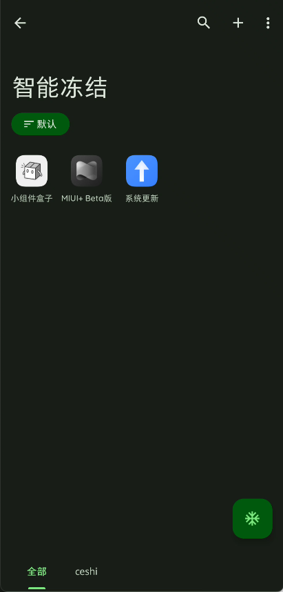
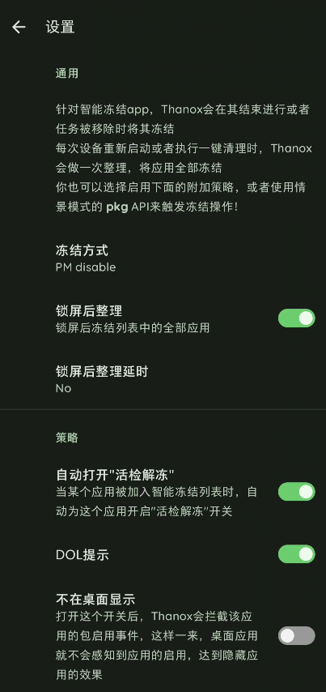
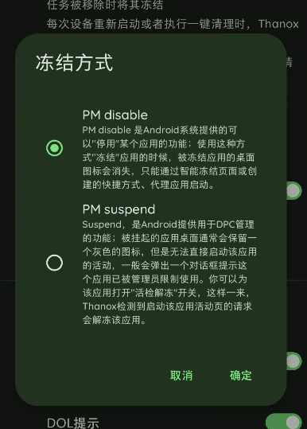

功能介绍
智能冻结会帮你在息屏，应用的最近任务移除时自动冻结App。
使用说明
首先点击右上角的+，把你想要冻结的app，加入下面的列表中，此时该应用会被立刻冻结。

列表展示了所有智能冻结的app，其中当前处于冻结状态的应用将会用黑白两色的图标，当前解冻状态app为彩色图标。
你可以点击列表项直接启动目标应用，此时Thanox会解冻并启动该app。
设置项

冻结方式
- PM Disable
PM disable 是最常用的冻结方式。Android系统提供的可以"停用"某个应用的功能；使用这种方式"冻结"应用的时候，被冻结应用的桌面图标会消失，只能通过智能冻结页面或创建的快捷方式、代理应用启动。
- Suspend，
Suspend是Android提供用于DPC管理的功能；被挂起的应用桌面通常会保留一个灰色的图标，但是无法直接启动该应用的活动，一般会弹出一个对话框提示这个应用已被管理员限制使用（Android系统行为）。你可以为该应用打开"活检解冻"开关，这样一来，Thanox检测到启动该应用活动页的请求会解冻该应用。

自动打开活检解冻
“活检解冻”是“检测到应用的活动启动请求后解冻该应用”的简称，英文简称“DOL”。 DOL的作用是自动解冻，当你从桌面或其他app启动某个被智能冻结的应用时，Thanox会自动解冻该App，这样就不用你自己手动解冻了。
因此，“自动打开活检解冻”这个开关的作用就是为新加入智能冻结的应用自动开启DOL。